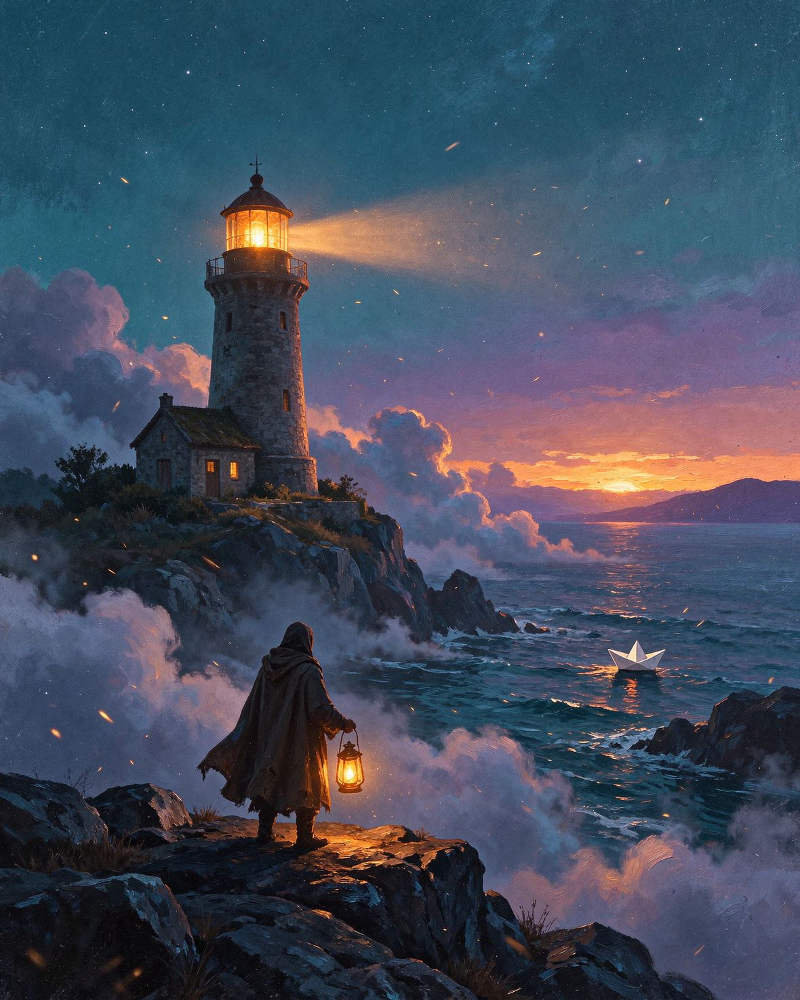
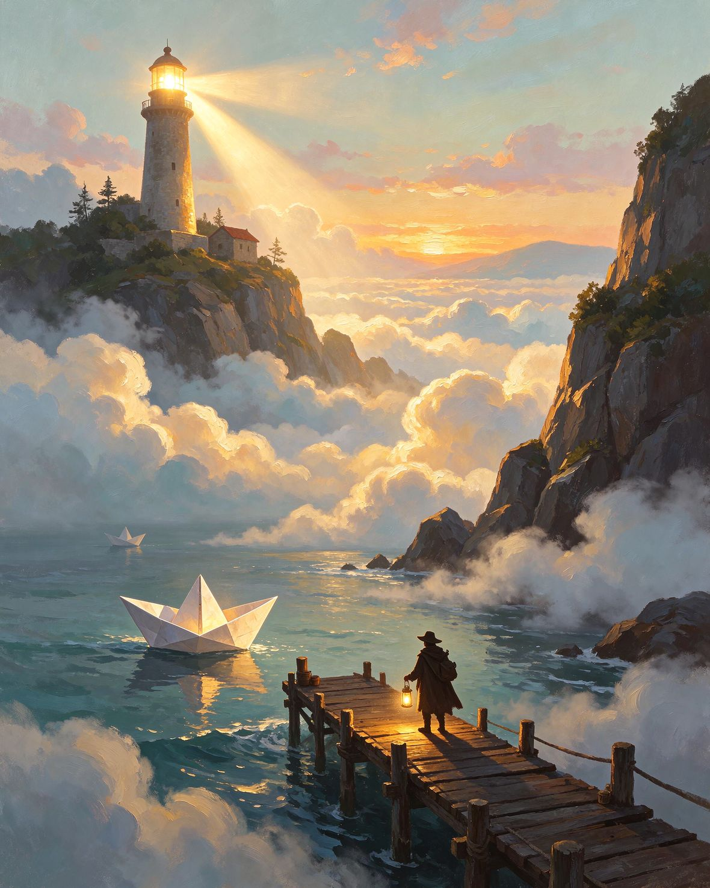

正在点亮灯塔…
有些东西没能加载成功。点重试再来一次，还不行就把下面的信息发给我。
这个游戏靠 JavaScript 跑，你的浏览器把脚本关掉了。允许脚本以后刷新这一页，灯就亮了。

THE LAMPLIGHTER'S SEVEN NIGHTS
灯油将尽。你每晚爬上屋顶，接住坠落的星屑，让灯塔亮到天亮——让一艘纸船找到回家的路。
升级只影响手感与容错，不会替你玩。光屑带不走，只能变成灯的一部分。

松手也没关系，风会替你停一会儿。